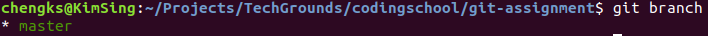

Git opdrachten

Voor het maken van de Git opdrachten heb je een account nodig op github. Maak eerst een github account aan.
Voordat je begint met de opdrachten:
- Lees je in wat Git doet voordat je met de opdrachten begint.
- Lees je in wat Github kan.
De volgende commando's worden toegepast:
- git clone
- git status
- git pull
- git push
- git commit
- git log
- git add
- git checkout
Opdracht 1: Maak een repository in github en clone deze repository naar jouw computer.
- Een repository maak je in github aan.
- Lees je in hoe git clone werkt.
Opdracht 2: Voer de git branch commando uit om te kunnen zien welke branches er in deze repository zijn. Het ziet als volgt uit:
Opdracht 3: Maak een branch aan op deze repository
- Lees je in wat git branch kan doen.
- Een branch maak je aan met een parameter die je kan mee geven aan de git branch commando.
Opdracht 4: Gebruik de commando om te zien dat jouw branch is aangemaakt.
Opdracht 5: Nu gaan we de aangemaakte branch uitchecken. Dat doe je met de git checkout commando.
- Lees je in wat git checkout kan doen.
- Een branch kan je uitchecken door een parameter mee te geven aan de git checkout commando.
Opdracht 6: Maak een bestand aan en voeg wat teksten toe.
Opdracht 7: Voer de git status commando uit. Je ziet dat het bestand die je hebt aangemaakt rood is. dit geeft aan dat het nog niet toegevoegd is om je bestand te committen naar jouw local repository.
- Lees je in wat git status kan doen.
Opdracht 8: Voer de git add commando uit. Je ziet het volgende:
Het geeft aan dat er niks is aangegeven om toe te voegen. Voer nu de git add . commando uit. Nu zul je zien dat het bestand die je hebt aangemaakt groen is.
- Lees je in wat git add kan doen.
Opdracht 9: Voer de git commit -m "bericht die je wilt invoeren" commando uit. Je ziet het volgende:
- Lees je in wat git commit kan doen.
Opdracht 10: Voer de git push commando uit.
- Lees je in wat git push kan doen.
Opdracht 11: Voer de git log commando uit.
- Lees je in wat git log kan doen.
Opdracht 12: Na de git push zul je de branch terug vinden in github.
Eind opdracht
- Maak een branch aan die heet 'eindopdracht'.
-
Maak een text bestand aan en vertel in eigen woorden wat de commando's doen:
- Wat doet git clone?
- Wat doet git status?
- Wat doet git branch?
- Wat doet git add?
- Wat doet git commit?
- Wat doet git push?
- Wat doet git checkout?
- Wat doet git log?
- Push de branch naar github.
- Zoek uit wat een pull request is en hoe je een pull request kan aanmaken in github.
- Voeg in je pull request je docent toe: chengkstech.
- Geef aan bij je docent dat je klaar bent. Je docent zal het nakijken.